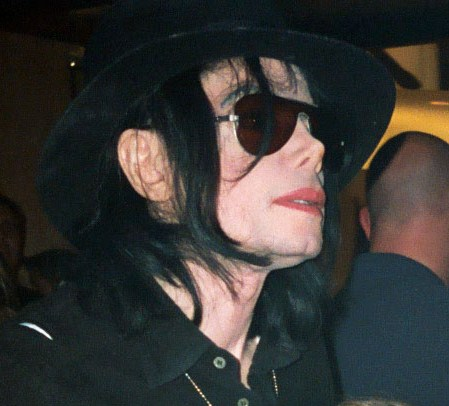

Майкъл Джоузеф Джаксън
Майкъл Джоузеф Джаксън [1]на английски: Michael Joseph Jackson, познат също като MJ (произнася се Ем Джей), Краля на поп музиката, съкратено Краля на попа,[2] е американски музикален изпълнител, текстописец, продуцент, танцьор, хореограф, актьор и бизнесмен. Той е един от най-известните певци в света, а албумът му Thriller (1982 г.) е продаден в над 110 милиона копия, което го прави най-продаваният музикален албум в историята. Държи рекорд в историята на музиката за най-много спечелени в една година (1984 г.) статуетки от наградите Грами - 8 на брой за албума си Thriller. Въвежда в музикалната индустрия така наречените short films, клипове-истории — каквито са Thriller, Bad, Remember the Time, You Rock My World, Ghosts и т.н.
Неговият типичен и извънредно характерен глас, както и маниера му на танцуване и звукът като цяло оказват силно влияние на много съвременни хип-хоп, поп и R&B творци. Майкъл Джаксън също така е и хуманист, който чрез своята фондация Heal the World Foundation прави милиони долари дарения на различни организации, особено тези, свързани с подпомагане на изпаднали в нужда деца — гладуващи, болни или нямащи достъп до образование.
Животът му е свързан с много противоречиви и странни събития, най-очевидното от които е промяната във физическия му облик, която най-вече се дължи на болестта му, която отнема меланина от кожата му, за която споделя в интервюто си с Опра Уинфри. Той е женен два пъти и има 3 деца — една дъщеря и двама сина. Майкъл е един от малцината, които са включени в Рокендрол залата на славата два пъти. Той е вписан в книгата на световните рекорди на Гинес - общо с 15 награди „Грами“ и 17 номер едно сингли. През юли 2009 г. в Англия е планирано турне с 50 негови концерта, за които билетите са разпродадени.[3] Майкъл Джаксън умира само седмици преди началото на турнето, на 25 юни 2009 г., след спиране на сърдечната му дейност. Преди смъртта на Джаксън са били предписани лекарствата пропофол и лоразепам. Личният му лекар е обвинен и намерен за виновен за непредумишлено убийство.[4] Смъртта на Майкъл Джаксън предизвиква международна вълна на скръб и милиони зрители наблюдават наживо по телевизията неговата възпоменателна церемония.
